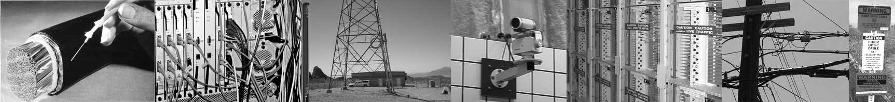
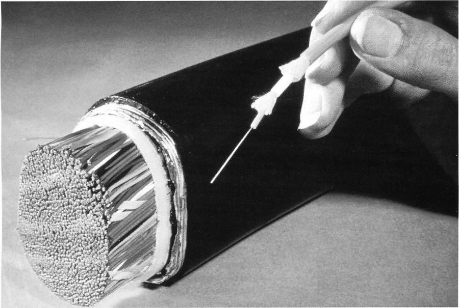
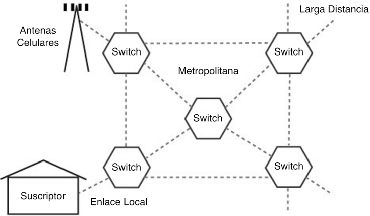
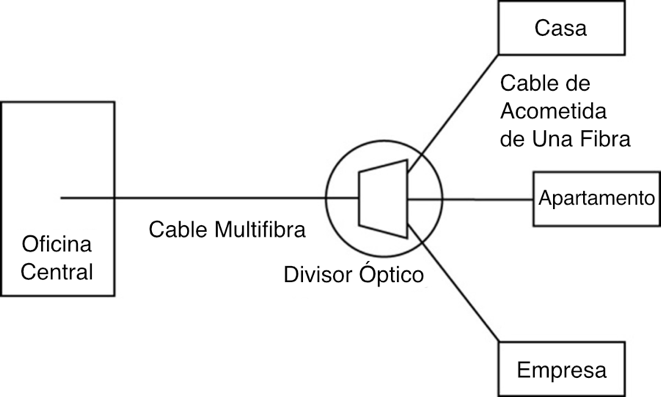
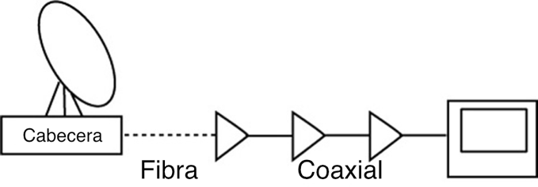
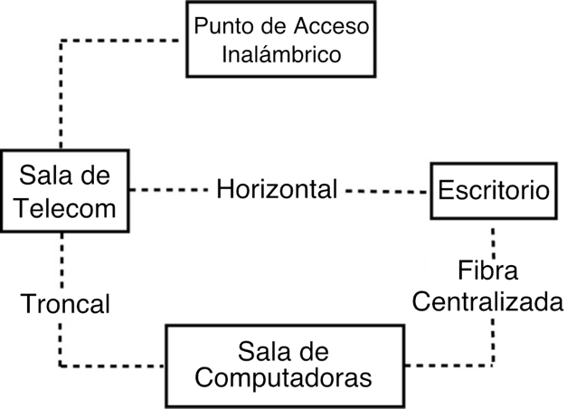

Libro FOA · Capítulo 03
Comunicaciones por fibra óptica
Cómo se utiliza la fibra en telefonía, Internet, televisión y redes de distintos entornos.
En este capítulo
Qué aprenderás
- Ventajas de la fibra óptica como medio de comunicación Cómo se utiliza la fibra óptica en los sistemas de comunicación
- Otros usos de la fibra óptica

¿Por qué Utilizar Fibra?
La fibra se ha convertido en el medio de comunicación preferido para teléfonos, móviles, CATV, redes troncales LAN, cámaras de seguridad, redes industriales y casi cualquier tipo de comunicación.

La mayor ventaja de la fibra óptica es que es el medio más rentable de transportar información. La fibra puede transportar más información a distancias más largas en menos tiempo que cualquier otro medio de comunicación, como ilustra muy bien la foto de arriba de finales de los 1970s que muestra cables de igual capacidad. La capacidad de ancho de banda y distancia de la fibra significa que se necesitan menos cables, menos repetidores, menos energía y menos mantenimiento. Además, la fibra no se ve afectada por las interferencias de la radiación o interferencia electromagnética, lo que permite transmitir información y datos con menos ruido y menos errores. La fibra es más ligera que los cables de cobre, lo que la hace popular en aplicaciones aeronáuticas y de automoción. Estas ventajas abren las puertas a muchas otras que hacen del uso de la fibra óptica la opción más lógica en la transmisión de datos.
Estas ventajas han llevado a la fibra a convertirse en el medio de transporte elegido para prácticamente todas las comunicaciones de datos, voz y vídeo.
Tanto las telecos como los operadores de CATV utilizan la fibra por razones económicas, pero su justificación de costes exige adoptar nuevas arquitecturas de red para aprovechar de los puntos fuertes de la fibra. Los diseñadores e instaladores de redes para planta interna en predios y LAN se dan cuenta ahora de que también deben adoptar nuevas arquitecturas de red. Una red de cableado local en predios bien diseñada también puede ser menos costosa si se realiza en fibra en lugar de cobre. La conversión de las redes de cobre es fácil con los convertidores de medios, unos artilugios que convierten la mayoría de los tipos de sistemas a fibra óptica. Incluso sumando el coste de los convertidores de medios, la red de fibra óptica suele ser más barata que la de cobre cuando se utiliza la arquitectura adecuada.
Comunicaciones con Fibra Óptica
Redes Telefónicas
Las redes telefónicas fueron los primeros grandes usuarios de la fibra óptica. Los enlaces de fibra óptica se utilizaron para sustituir a los enlaces de cobre o radio digitales entre conmutadores telefónicos, empezando por los enlaces de larga distancia, denominados líneas largas, en los que las capacidades de distancia y ancho de banda de la fibra la hacían mucho más económica. Las telecos utilizan la fibra para conectar todas sus oficinas centrales y conmutadores de larga distancia porque tiene miles de veces el ancho de banda del cable de cobre y puede transportar señales cientos de veces más lejos antes de necesitar un repetidor, lo que hace que el coste de una conexión telefónica por fibra sea sólo un pequeño porcentaje del coste de la misma conexión por cobre.

Después de que los enlaces de larga distancia se convirtieran a fibra, las telecos empezaron a sustituir por fibra los enlaces más cortos entre conmutadores, por ejemplo entre conmutadores de la misma área metropolitana. Hoy en día, prácticamente todas las redes telefónicas se han convertido a la fibra. Las empresas de telecomunicaciones y otros grupos están instalando fibra hasta el hogar (FTTH) mediante sistemas de red óptica pasiva (PON) de bajo coste que utilizan divisores para repartir el coste de algunos componentes de fibra óptica entre un máximo de 32 abonados.

Incluso las redes de telefonía móvil tienen redes troncales de fibra. Es más eficaz y menos costoso que utilizar el preciado ancho de banda inalámbrico para las conexiones troncales. Las torres de telefonía móvil con muchas antenas tendrán grandes bandejas de cables o pedestales donde los cables de fibra se conectan a la electrónica de la antena.
Internet
Internet siempre se ha basado en una red troncal de fibra óptica. Empezó formando parte de la red telefónica, que entonces era fundamentalmente de voz, pero se ha convertido en la mayor red de comunicaciones, ya que el tráfico de datos ha superado al de voz. Ahora las telecos están trasladando sus comunicaciones de voz al protocolo de Internet (IP) para abaratar costes.
CATV
La mayoría de los sistemas de CATV también utilizan redes troncales de fibra. Las empresas de CATV utilizan la fibra porque les da mayor fiabilidad y la oportunidad de ofrecer nuevos servicios, como el servicio telefónico y las conexiones a Internet.
La televisión por cable solía tener una pésima reputación en cuanto a fiabilidad, pero no era un problema del servicio, sino de la topología de la red. La CATV utiliza señales analógicas de muy alta frecuencia, hasta 1 GHz, que tienen una gran atenuación en el cable coaxial. En un sistema urbano, la CATV necesitaba muchos amplificadores (repetidores) para llegar a los usuarios al final del sistema; 15 o más eran habituales. Los amplificadores fallaban a menudo, lo que significaba que el abonado recibiendo servicio del amplificador averiado perdía señal. Encontrar y reparar los amplificadores averiados era difícil y llevaba mucho tiempo, lo que provocaba quejas de los abonados.

El desarrollo de láseres de realimentación distribuida (DFB por siglas en inglés [distributed feedback]) altamente lineales permitió convertir los sistemas de CATV en sistemas ópticos analógicos. Las empresas de CATV "sobre-construyen" con fibra. Conectan sus cabeceras con fibra y luego llevan la fibra al vecindario. Atan el cable de fibra a la antena "línea dura" coaxial utilizada para el resto de la red o tirar de ella en el mismo conducto subterráneo. La fibra les permite dividir su red en áreas de servicio más pequeñas, normalmente de menos de 4 amplificadores de profundidad, que evitan que un gran número de amplificadores se conecten a la red de clientes se vean afectados por una interrupción, haciendo que su red sea más fiable y más fácil de solucionar, y proporcionando un mejor servicio y una mejor relación con los clientes.
El desarrollo de estas redes híbridas de fibra coaxial (HFC) y del módem de cable permitió a las empresas de CATV ofrecer los primeros servicios reales de Internet de banda ancha. El desarrollo del módem de cable y de la red HFC creó una red digital capaz de ofrecer Internet a velocidades muy superiores a las de los servicios digitales por líneas telefónicas, y sólo la fibra hasta el hogar (FTTH) puede superar las velocidades del módem de cable. Las empresas de CATV han desarrollado sus propios servicios FTTH sobre redes ópticas pasivas llamadas RFOG que les permiten ser competitivas con los servicios FTTH.
Redes en Predios
Las redes en predios o de planta interna, sobre todo las LAN (redes de área local) de ordenadores, utilizan fibra óptica principalmente en la red troncal, pero cada vez más hasta el escritorio y para conectar puntos de acceso inalámbricos. La red troncal LAN suele necesitar distancias mayores que las que puede proporcionar el cable de cobre (Cat 5/5e/6/6A) y, por supuesto, la fibra ofrece un mayor ancho de banda para futuras ampliaciones. La capacidad de la fibra para adaptarse a las actualizaciones de la red ha hecho que un tipo de fibra haya sobrevivido a 9 generaciones de cables de cobre en redes LAN. Un nuevo tipo de fibra (OM3) ofrece posibilidades de actualización en el futuro, mientras que el cobre sigue luchando contra los aumentos de velocidad de la red.

Hasta hace poco, las grandes redes LAN corporativas utilizaban redes troncales de fibra con cable de cobre hasta el escritorio. Los conmutadores y concentradores LAN suelen disponer de puertos de fibra óptica, pero los PC tienen interfaces para Ethernet en cobre. Existen convertidores de medios son económicos y permiten conectar los PC a la fibra. La fibra hasta el escritorio puede ser rentable si se diseña adecuadamente utilizando una arquitectura de fibra centralizada sin conmutación (switch) local en el armario de telecomunicaciones, pero muchos usuarios ya no quieren estar "atados" a un cable de red. Las ventas de ordenadores de escritorio están disminuyendo y los portátiles son el PC elegido por la mayoría de los usuarios, con conexiones inalámbricas a la red. Por lo general, sólo los usuarios de grandes volúmenes de datos, como ingenieros y diseñadores gráficos, utilizan estaciones de trabajo de escritorio; todos los demás adquieren un portátil con conexión inalámbrica.
LAN Ópticas
Desde finales de la década de 1990, las normas internacionales reconocen las redes LAN que utilizan fibra hasta el escritorio (FTTD) mediante arquitecturas de fibra centralizadas. En este caso, el típico cableado troncal, los conmutadores Ethernet en un armario de telecomunicaciones y el cableado horizontal se sustituyen por una red de fibra directa, ya sea con convertidores mediales o conmutadores de fibra que realizan la conversión entre los sistemas de cobre y fibra. La ventaja de la fibra centralizada es que no es necesario colocar los conmutadores en un armario de telecomunicaciones con sus requisitos de alimentación, tierra y aire acondicionado. De hecho, no se necesita ningún armario de telecomunicaciones.
Más recientemente, las LAN ópticas se han construido utilizando la misma electrónica y cableado que la fibra hasta el hogar (FTTH). Una LAN empresarial típica es similar a la red FTTH de una unidad de vivienda múltiple (apartamentos, pisos, condominios) y las economías de escala de FTTH, con más de 100 millones de conexiones de abonados, hacen que la electrónica sea mucho menos costosa que incluso los conmutadores de cobre básicos.
Estas LAN ópticas (OLAN) utilizan la arquitectura de red óptica pasiva de FTTH, generalmente versiones gigabit GPON o EPON que funcionan bidireccionalmente sobre una única fibra, utilizando todas monomodo como los sistemas telefónicos de los que derivó FTTH. Los dispositivos se conectan a la OLAN con cables de cobre UTP normales. Estas OLAN suelen ser mucho más baratas de instalar que las LAN de cableado estructurado normal y consumen mucho menos energía.
Sistemas de Seguridad
Los sistemas de seguridad son más seguros en fibra. Hoy en día, prácticamente cualquier red tiene una opción de fibra óptica. Las cámaras de CCTV utilizadas para la vigilancia suelen utilizar fibra por su capacidad de distancia y seguridad, especialmente en grandes edificios como aeropuertos y redes metropolitanas. La fibra también tiene mucho más ancho de banda que el coaxial, por lo que se pueden multiplexar varias cámaras en una fibra. Los enlaces bidireccionales permiten controlar las cámaras con movimiento horizontal, vertical y zoom (PZT por sus siglas en inglés [pan, zoom, tilt]). Otros dispositivos de seguridad, como las alarmas de intrusión o las alarmas perimetrales, pueden utilizar fibra y, de hecho, algunos utilizan sensores de fibra óptica.
Redes Metropolitanas
Muchas ciudades han incorporado la fibra óptica a sus redes de comunicaciones. Las redes metropolitanas utilizan la fibra para muchas otras aplicaciones además de las cámaras de vigilancia CCTV, incluida la conexión de organismos de servicios públicos como bomberos, policía y otros servicios de emergencia, hospitales, escuelas y sistemas de gestión del tráfico. Las ciudades pueden instalar cables en lugares estratégicos para que varios servicios puedan compartir las fibras de los cables, ahorrando costes de instalación. Las ciudades también están aprendiendo a enterrar los conductos cada vez que se excava una calzada, de modo que cuando haya que instalar cables no sea necesario realizar más obras.
Redes Industriales
Las plantas industriales utilizan la fibra por su robustez, distancia e inmunidad al ruido. En un entorno industrial, las interferencias electromagnéticas (EMI) suelen ser un gran problema. Los motores, relés, soldadores y otros equipos industriales generan una enorme cantidad de ruido eléctrico que puede causar grandes problemas con el cableado de cobre, especialmente con el cable no apantallado como el UTP. Para tender cable de cobre en un entorno industrial, a menudo es necesario pasarlo por un conducto que proporcione el apantallamiento adecuado. La fibra también es muy flexible, por lo que muchos robots industriales utilizan fibra para los controles, a menudo fibra de plástico.
La fibra óptica es totalmente inmune a las interferencias electromagnéticas. Sólo hay que elegir un tipo de cable que sea lo bastante resistente para la instalación, siendo el cable breakout una buena opción por su construcción resistente. El cable de fibra óptica puede instalarse fácilmente de un punto a otro, pasando justo al lado de las principales fuentes de EMI sin ningún efecto. La conversión de redes de cobre es fácil con los convertidores de medios, aparatos que convierten la mayoría de los tipos de sistemas a fibra óptica. Incluso con el coste de los convertidores de medios, la red de fibra óptica será menor que la de cobre tendida en conducto.
Redes de Servicios Públicos
Las empresas de servicios públicos utilizan la fibra para las comunicaciones, la vigilancia por CCTV y la gestión de redes. Las compañías eléctricas llevan décadas utilizando la fibra óptica para las comunicaciones y la gestión de sus sistemas de distribución. Pronto se dieron cuenta de que la inmunidad de la fibra a las interferencias electromagnéticas les permitiría utilizar las redes de comunicaciones y control muy cerca de los circuitos eléctricos sin problemas. Las compañías eléctricas también aprovechan al máximo la inmunidad de la fibra al ruido, incluso instalando fibra dentro de los cables de distribución de energía de alta tensión. Algunas empresas de servicios públicos instalan fibras dentro de sus redes de distribución de alta tensión y alquilan fibras a otras empresas de telecomunicaciones. Las empresas de servicios públicos utilizan la fibra en una aplicación que no es de comunicaciones: los sensores de fibra óptica permiten controlar la alta tensión y la corriente en sus sistemas de distribución. El interés por la gestión de "redes inteligentes" de distribución de energía a mejorar la eficiencia se basa en el uso de fibra óptica para la gestión de la red.
Militares y Plataformas
Los militares utilizan la fibra en todas partes, en bases, plataformas (barcos y aviones) y en el campo de batalla porque es difícil de dañar, intervenir o atascar. Los aviones utilizan la fibra por su fiabilidad e inmunidad al ruido, pero también porque es más ligera. Incluso millones de coches tienen redes de fibra que conectan toda la electrónica porque la fibra es inmune al ruido y ahorra peso.
Diseño de Redes de Fibra Óptica
Se trata de un tema muy amplio, por lo que se dedica una sección completa a él más adelante en el libro. El ancho de banda adicional y la capacidad de distancia de la fibra permiten hacer cosas que no son posibles con los cables de cobre o inalámbricos. En primer lugar, es necesario comprender a fondo qué señales se van a transmitir a través de la fibra y las especificaciones del equipo de transmisión. A continuación, hay que trazar un mapa y visitar el lugar de trabajo para entender dónde hay que instalar la planta de cable de fibra óptica. Conozca las normas, pero utilice el sentido común al diseñar la instalación. Ten en cuenta los posibles problemas y resuélvelos o evítalos. No tome atajos que puedan afectar al rendimiento o la fiabilidad. Documéntelo todo por completo. Planifique futuras ampliaciones y restauraciones en caso de problemas. Aquí no hay sustituto para la experiencia y el sentido común.
Preguntas de Repaso
Verdadero/Falso
Indique si la afirmación es verdadera o falsa.
______ 1. La mayor ventaja de la fibra óptica es que es el medio más rentable de transportar información.
______ 2. Las redes telefónicas se han convertido a la fibra, incluidas las de larga distancia y las metropolitanas, pero la fibra hasta el hogar (FTTH) aún no es factible.
Elección Múltiple
Identifique la opción que mejor complete el enunciado o responda a la pregunta.
______ 3. En un entorno industrial, la fibra se utiliza sobre todo para
______ .
- Evitar interferencias electromagnéticas
- Conexiones de altísima velocidad a las máquinas
- Soportan altas temperaturas
- Tolerar el maltrato físico
______ 4. ¿Cuál de los siguientes elementos no es necesario en una arquitectura de cableado de fibra óptica centralizada?
- Repetidores o concentradores
- Armarios de telecomunicaciones
- Tomas de pared
- Tarjetas NIC
______ 5. Las redes de cobre pueden convertirse a fibra óptica mediante
______ .
- Concentradores de fibra
- Convertidores de medios
- Paneles de conexión
- Recableado
Respuesta Múltiple
Identifique una o varias opciones que completen mejor el enunciado o respondan mejor a la pregunta.
6. La capacidad de ancho de banda y distancia de la fibra óptica significa que. (elija todas las que apliquen)
- Se necesitan menos cables
- Se necesitan menos repetidores
- La red consume menos energía
- Requiere menos mantenimiento
______ 7. ¿Cuál de los siguientes sistemas de comunicaciones suele utilizar redes troncales de fibra óptica? (elija todas las que procedan)
- Teléfonos
- CATV
- Internet
- Teléfonos móviles
Estudios y Proyectos Adicionales
Comprueba qué tipos de equipos de comunicaciones hay disponibles consultando las páginas web de las empresas que ofrecen sistemas, convertidores multimedia, etc.